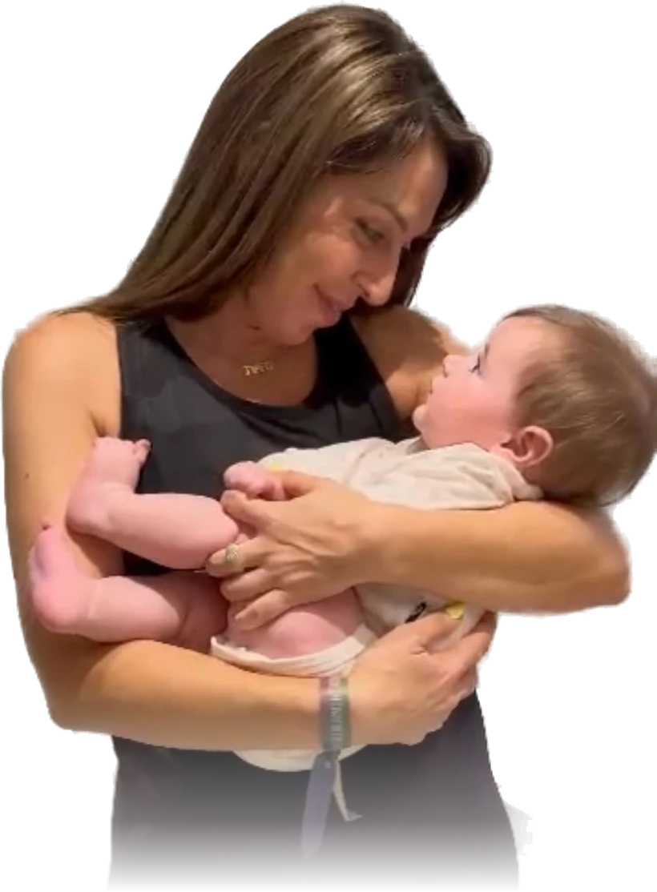
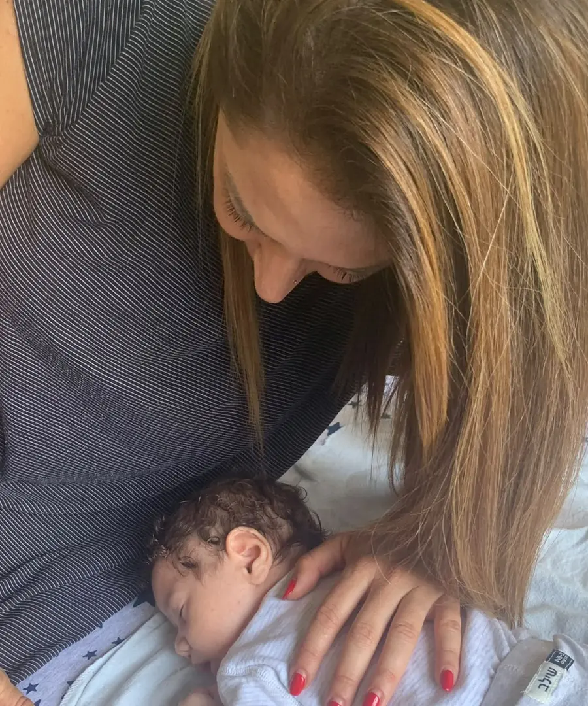
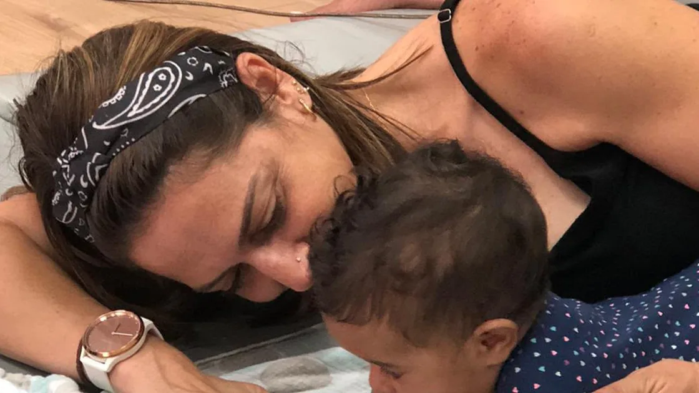

תמי שני | יועצת שינה והתפתחות
תינוק שנרדם לבד.
אמא שסוף סוף ישנה בלילה.
אני תמי שני, יועצת שינה והתפתחות עם 15 שנות ניסיון ואלפי משפחות שליוויתי. יחד נבנה לבייבי שלכם הרגלי שינה בריאים, בדרך ברורה ומותאמת אישית, בלי להשאיר אותו לבכות לבד.


רגע של אמת
את לא לבד.
וזה לא באשמתך.
- עוד לילה שנהרס ב-02:00.
- עוד הרדמה של שעה בשביל תנומה של 25 דקות.
- עוד בוקר שמתחיל בקפה שלישי.
מזדהה?
קראת הכל. שמעת הכל. אולי גם ניסית הכל. ובין כל הגישות, השיטות והדעות (בעיקר של אמא והחמות) נשארת מבולבלת ועייפה.
אז הנה האמת הפשוטה: לבייבי שלך אין בעיית שינה.
יש לו הרגלים. והרגלים אפשר לשנות. בעדינות, עם מענה לבכי, ובקצב שלך.

שיטת תכלס: הדרך של תמי
בלי תיאוריות מסובכות. ארבעה עקרונות שעובדים.
הרגלים, לא גזירת גורל
תינוק שנרדם רק על הידיים? רק עם בקבוק? זה הרגל. והרגל אפשר לשנות בעדינות, שלב אחרי שלב.
מענה לבכי, תמיד
כל בכי מקבל מענה מיידי. גם בזמן תהליך. לומדים להרגיע, בלי לוותר על הלמידה.
שינה נפרדת מאוכל
מפרידים בין הנקה או בקבוק לבין הירדמות. הבייבי אוכל כשהוא רעב, ונרדם כי הוא יודע איך.
דרך שמתאימה לך
אין דרך אחת נכונה. יש דרך שאת מאמינה בה. בשיחה קצרה נמצא את שלך.
אמהות מספרות
הן כבר ישנות בלילה
מילים אמיתיות של אמהות שעברו את הדרך.
אין כמוך, הצלת לי את הלילות ואת הימים ❤️
וואי, מילה במילה! ממש יישמתי את זה ועבר קליל ביותר!
בא לי להביא עוד ילד ולהתחיל את האתגר מחדש 😍

הקורס: תכלס - איך להרדים תינוק
כל השיטה, מסודרת בסרטונים קצרים. מהשלב הראשון ועד הירדמות עצמאית. והשיעור הראשון? במתנה. ככה תדעי אם זה בשבילך עוד לפני שהוצאת שקל.
השיעור הראשון במתנה, בלי להוציא שקל.
שליף ליד המיטה
מדריכים קצרים ופרקטיים, בנויים בדיוק לרגעים שאת צריכה תשובה עכשיו. ב-22:00 בלילה. וגם ב-02:00 לפנות בוקר.
נעים להכיר, אני תמי
התחלתי בדיוק איפה שאת נמצאת עכשיו: אמא עייפה, מבולבלת, עם תינוק שלא ישן.
היום, אחרי 15 שנים ואלפי תינוקות, אני הדרך הקצרה בין הלילה הזה ללילה רגוע.
תואר ראשון במדעי החברה, יועצת שינה, מדריכת הורים, מלווה התפתחותית ומדריכת דנסטן, שפת התינוקות.

הבוקר שאחרי
הלילה הרגוע הראשון מתחיל בשיחה אחת
שיחת ייעוץ ללא עלות. בלי התחייבות. נבין ביחד מה קורה, ואיך מתקדמים.
בלי התחייבות, מענה תוך יום.
באהבה ❤️ תמי